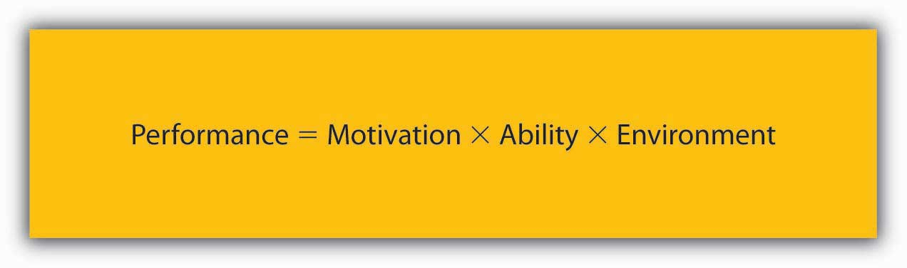

Reading this chapter will help you do the following:
MotivationThis is defined as “the intention of achieving a goal, leading to goal-directed behavior.” is defined as “the intention of achieving a goal, leading to goal-directed behavior.”Columbia encyclopedia. (2004). New York: Columbia University Press. When we refer to someone as being motivated, we mean that the person is trying hard to accomplish a certain task. Motivation is clearly important for someone to perform well. However, motivation alone is not sufficient. AbilityThe characteristic of having the skills and knowledge required to perform the job.—having the skills and knowledge required to perform the job—is also important and is sometimes the key determinant of effectiveness. Finally, environmental factors—having the resources, information, and support one needs to perform well—are also critical to determine performance.
Figure 14.2 The P-O-L-C Framework

What makes employees willing to “go the extra mile” to provide excellent service, market a company’s products effectively, or achieve the goals set for them? Answering questions like this is of utmost importance to understand and manage the work behavior of our peers, subordinates, and even supervisors. As with many questions involving human beings, the answers are anything but simple. Instead, there are several theories explaining the concept of motivation.
Figure 14.3
According to this equation, motivation, ability, and environment are the major influences over employee performance.
Source: Mitchell, T. R. (1982). Motivation: New directions for theory, research, and practice. The Academy of Management Review, 7, 80–88; Porter, L. W. & Lawler, E. E. (1968). Managerial attitudes and performance. Homewood, IL: Dorsey Press